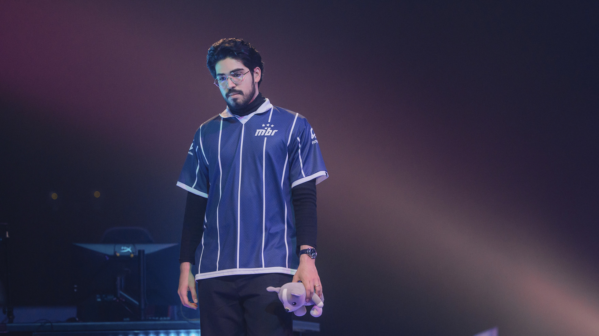
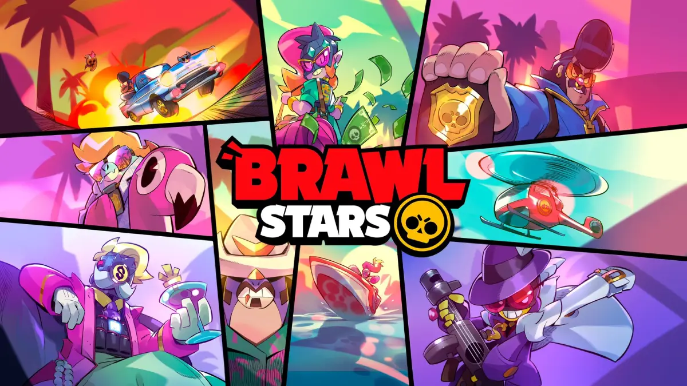
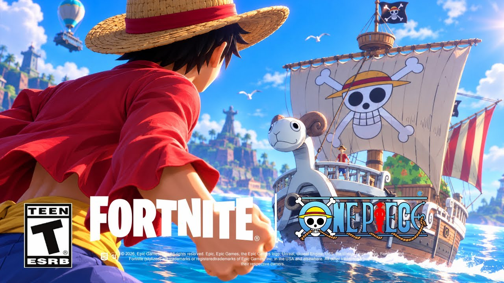
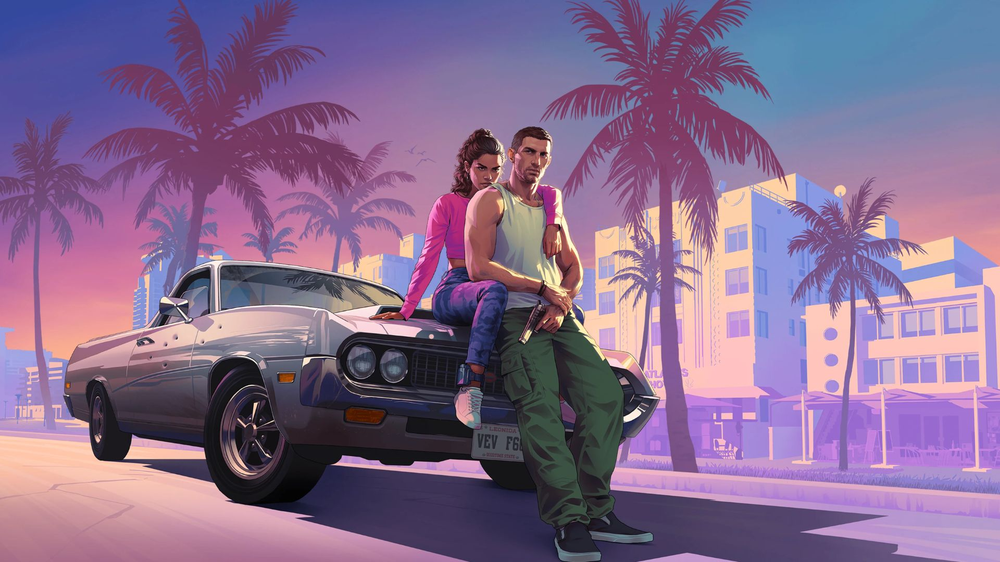
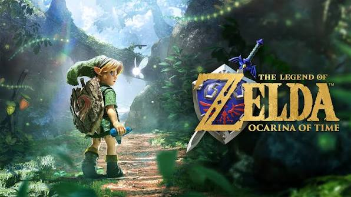

Valorant: Rumores de Aspas & LOUD Bicampeã
Análise completa dos bastidores do VCT: a possível bomba da transferência de aspas para a FUT Esports e o legado eterno da LOUD no cenário mundial.
O seu portal definitivo de Games e e-Sports.
Bem-vindo ao Nerdrop News! Este blog traz as principais notícias, vazamentos e atualizações do cenário competitivo de e-Sports e dos jogos mais jogados do momento. Explore os destaques abaixo clicando nas imagens para acessar as páginas completas.

Análise completa dos bastidores do VCT: a possível bomba da transferência de aspas para a FUT Esports e o legado eterno da LOUD no cenário mundial.

Como a chegada de novos brawlers como os Thunder Frogs e o sistema de buffies viraram a mesa no competitivo e nas ranqueadas globais.

A caçada insana dos players pelos cobiçados tokens piratas para faturar acesso gratuito à Loja de Itens.

A Rockstar Games segue movimentando a comunidade com preparativos para o lançamento de GTA VI, gerando grande expectativa sobre o tamanho dos arquivos, otimização gráfica para consoles da nova geração e novidades profundas do mapa em Vice City.
Fonte: Rockstar Games / Times of India
Desenvolvedores e fãs discutem a possibilidade real de uma recriação moderna do clássico de Zelda. Executivos da Nintendo comentaram sobre os desafios de readaptar a obra-prima para os novos hardwares sem perder a essência mágica original.
Fonte: GamingBolt / Nintendo Insider